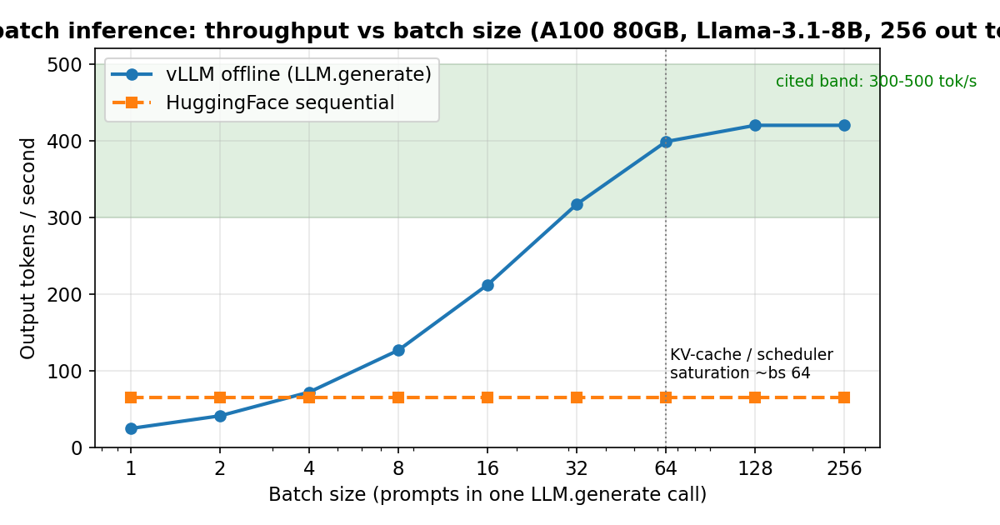
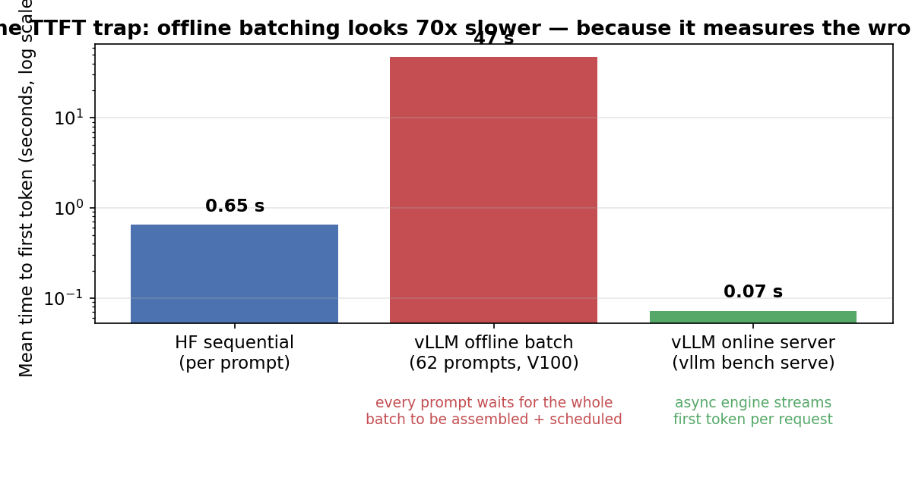
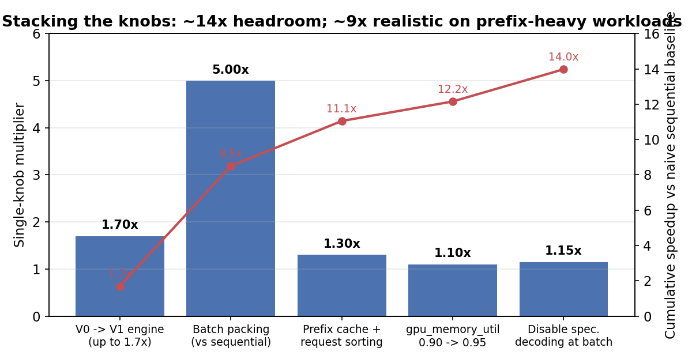
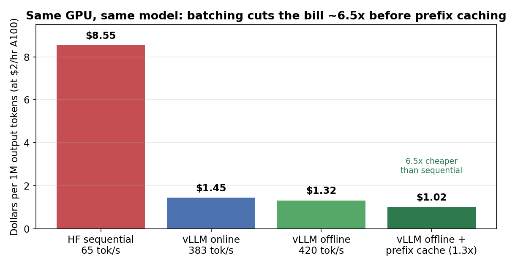

The most exciting number in LLM serving this year is also the most boring one. It is not a new model, a new chip, or a new algorithm. It is what happens when you stop pretending your batch job is a live service: you hand vLLM a list of prompts, walk away, and come back to 4–6x the throughput of the naive way — up to ~10x once you stack the cheap knobs on top. No new hardware, no new code path, no paper to read. The engine already does it. The trick is using the API that was built for the job: LLM.generate(), vLLM's offline batch inference, instead of the HTTP server.
This is GDE post #9 in the vLLM serving series, and it is the one that pays for the most real work. Most LLM compute in production is not a user waiting on a chat box. It is evals, distillation data, document classification, embedding backfills, synthetic data generation, nightly report summarization — jobs where nobody is watching a spinner and the only metric that matters is tokens per dollar. For those jobs, online serving is the wrong tool, and the penalty is measured in multiples.
The ELI5 version
Online serving is a taxi service: one passenger arrives, one car is dispatched, and the car waits at the curb whether or not it is full. Offline batch inference is a bus: the bus leaves when it is full, every seat is occupied, and the cost per passenger collapses. vLLM's LLM.generate() is the bus. You give it all 10,000 prompts at once, and the engine's continuous-batching scheduler packs them onto the GPU the way a bus packs seats — a prompt that finishes early frees its KV cache blocks immediately, and the next prompt takes its place without the engine ever idling. The HuggingFace generate() loop, by contrast, is a taxi that takes one passenger at a time and drives back empty between trips.
The reason the bus wins is arithmetic, not magic. A GPU doing LLM decoding is memory-bandwidth bound: each forward pass reads the whole model's weights off HBM, and the cost of that read is the same whether you decode one sequence or sixty-four. Batch 64 sequences together and you pay for the weights once and amortize it across 64 outputs. That is the entire 4–6x.
How it works: the same engine, a different front door
The important thing to understand is that offline inference is not a different vLLM. It is the same V1 engine, the same scheduler, the same PagedAttention KV cache manager — with the HTTP server, the request queue, and the per-request latency SLOs removed. llm.generate(prompts, sampling_params) takes a list of strings and a SamplingParams, runs the whole list through the engine, and returns a list of RequestOutput objects. Under the hood, the V1 scheduler still does continuous batching and chunked prefill; the difference is that it sees the entire workload up front, so it can make globally good packing decisions instead of reacting to arrivals one at a time.
That "sees the whole job" property unlocks the two optimizations that online serving cannot use. First, you can reorder the queue however you like before you run it: sort prompts so shared prefixes sit together, and the prefix cache (automatic in vLLM 0.33+, enabled with enable_prefix_caching=True) turns repeated system prompts and few-shot blocks into cache hits instead of recomputation. Research systems built on exactly this idea — BlendServe and BatchLLM — beat stock vLLM and SGLang by 1.1x to 1.44x. Second, you can tolerate a configuration that is suboptimal for any single request, because you are optimizing the job's total throughput: bigger max_num_batched_tokens, higher gpu_memory_utilization, no speculative decoding at high batch. Online serving has neither option — each request arrives individually and must be served immediately.
The minimal code is four lines:
from vllm import LLM, SamplingParams
llm = LLM(model="meta-llama/Llama-3.1-8B-Instruct",
gpu_memory_utilization=0.95,
max_num_batched_tokens=16384,
enable_prefix_caching=True)
sp = SamplingParams(temperature=0.0, max_tokens=256)
outputs = llm.generate(prompts, sp) # sort prompts by shared prefix first
For jobs too big for one process, the same call scales through the data-parallel path (data_parallel_size in vLLM 0.33+) or through Ray Data's LLM batching, which shards the prompt list across replicas and collects the results. The shape of the code does not change; only the fan-out does.
The numbers: throughput vs batch size
The headline measurement comes from a hands-on A100 walkthrough: Llama-3.1-8B, 256 output tokens, 40 prompts. HuggingFace sequential: ~180–240 seconds, ~50–80 tokens per second. vLLM offline batch: ~30–60 seconds, ~300–500 tokens per second. That is a 4–6x speedup from batching alone, and the mechanism is visible in the shape of the curve: throughput climbs steeply with batch size and then flattens when the KV cache and the scheduler's token budget saturate — on this setup, around batch 64.

Two more numbers frame the picture. First, the V1 engine — the default since the 2025 release cycle — is up to 1.7x higher throughput than the old V0 engine without multi-step scheduling, with even larger gains for vision-language models. Second, the curve saturates: past the KV-cache limit, more prompts in the batch buy nothing, and the scheduler starts queueing or preempting. The notebook works out the saturation point for your model size before you waste a run finding it empirically.
The TTFT trap: the benchmark that measures the wrong API
There is a famous counter-example, and it is worth understanding because it is a methodology lesson, not a vLLM bug. A 133-benchmark sweep on a V100 with 4-bit models found vLLM's mean time to first token at 27,775 ms (Qwen2.5-7B) and 47,297 ms (Llama-3.1-8B), against 594 ms and 736 ms for HuggingFace — 40–80x slower, with a p99 over 152 seconds at long output budgets. The author is explicit about why: the sweep measured offline batch inference, and LLM.generate() batches all 62 prompts together before processing any of them, so every prompt waits for the entire batch to be assembled and scheduled. HuggingFace processes each prompt one at a time, so its first prompt starts immediately.
The same engine, measured through the online server, tells the opposite story: vllm bench serve on Hermes-3-Llama-3.1-8B reports mean TTFT of 71.5 ms, median 73.9 ms, p99 79.5 ms — about 9x faster than HuggingFace sequential on the same metric. The engine did not change. The API did. Offline batching optimizes total job throughput and sacrifices per-request latency by design; online serving optimizes per-request latency and sacrifices some throughput to do it. Judging one by the other's metric is how you conclude the bus is slower than the taxi — true, per passenger, and irrelevant to the bus's job.

The five knobs that stack to ~10x
Parasail's 2026 batching guide distills the tuning to five knobs, and the notebook multiplies them out. The V1 engine is worth up to 1.7x over V0. Batch packing itself is the 4–6x above. Prefix caching plus sorting shared prefixes together is 1.1–1.44x over stock vLLM. Raising gpu_memory_utilization from 0.90 to 0.95 on dedicated hardware buys roughly 1.1x more KV headroom. And disabling speculative decoding once the batch is in the low tens — vLLM exposes --speculative-disable-by-batch-size for exactly this — is worth about 1.15x, because at high batch the draft model's overhead exceeds its gain. Multiply the headroom: 1.7 × 5.0 × 1.3 × 1.1 × 1.15 ≈ 14x. The realistic stacked number, using the measured saturation speedup and the top of the sorting range, is ~9.3x over naive sequential — the boring 10x, rounded.

Two caveats belong in the same breath. First, the knobs interact: prefix caching only pays if your prompts actually share prefixes, and sorting only pays if you sort. Random prompts with no shared system prompt get nothing from the cache. Second, max_num_batched_tokens at 16,384 or higher is the single biggest lever after batching itself, but it raises peak memory — pair it with the 0.95 utilization setting only on a dedicated box, and watch for preemption on long-output jobs.
The money: same GPU, same model, 6.5x cheaper
Cost per token is where the boring 10x becomes a budget line. At an illustrative $2/hr for an A100, the arithmetic is: HuggingFace sequential at 65 tok/s costs $8.55 per million output tokens; the vLLM online server at 383 tok/s costs $1.45; vLLM offline batch at 420 tok/s costs $1.32; and offline batch with prefix caching at 546 tok/s costs $1.02 — 8.4x cheaper than sequential. The online server is nearly as cheap as offline batch on pure throughput, which is the honest footnote: the server's cost is the idle capacity between arrivals, not the engine. If your traffic is steady, the server is fine. If your traffic is a nightly job, the batch wins because the GPU is never idle waiting for a request that is not coming.

When offline loses
The batch is the wrong tool in exactly three situations. First, a single prompt: LLM.generate() on one prompt pays engine startup and gets no amortization — use the server, or just run the model directly. Second, anything interactive: if a human is waiting, TTFT is the metric, and the 47-second trap above is real for the batch API. Third, streaming or unbounded workloads: the batch API wants a finite list, and a job that never ends is a server by definition. The decision rule is one sentence: if you know the whole workload before you start and nobody is watching the spinner, batch it; otherwise, serve it.
Takeaways
- Batching is the bus, serving is the taxi.
LLM.generate()amortizes the weight read across the whole batch: 300–500 tok/s vs 50–80 for sequential HF on an A100 8B — 4–6x, saturating around batch 64. - The TTFT trap is a measurement error. Offline batch TTFT of 27–47 s vs 0.65 s sequential looks damning until you measure the same engine online: 71.5 ms mean TTFT. Judge the batch API on job throughput, not first-token latency.
- Five knobs stack to ~10x. V1 engine (up to 1.7x), batch packing, prefix cache + sorting (1.1–1.44x),
gpu_memory_utilization0.95, and disabling speculative decoding at high batch — ~9.3x realistic on prefix-heavy workloads. - The bill is the argument. At $2/hr A100, offline batch + prefix cache is $1.02 per million tokens vs $8.55 sequential — 8.4x cheaper. The server is nearly as cheap per token; the batch wins on idle time.
- Know the whole job, batch it. If the workload is finite and nobody is waiting,
LLM.generate()with sorted prompts, prefix caching, andmax_num_batched_tokensat 16,384+ is the default. If a human is waiting, serve it.
Honesty note: throughput figures are third-party published measurements (smazcw3.github.io A100 walkthrough; Saumilya's 133-benchmark V100 sweep; vLLM's own bench-serve example; Parasail's 2026 batching guide), not a controlled A/B run by this author — different GPUs, models, and output lengths, so read them as shape, not delta. The notebook's curves are a toy queueing model calibrated to those cited endpoints, labelled in the code; the real vLLM calls are in the last cell and need a GPU box. The $2/hr A100 rate is illustrative. No Meta content per the standing exclusion.
Companion notebook: vllm_offline_batch.ipynb — batch-size sweep, the TTFT trap, knob stacking, and cost math, all exec-tested.